生成日期：2026-06-27
源文档：docs/FineVision_项目展示文档与操作手册.md
展示入口：docs/FINEVISION_SHOWCASE_MANUAL.html
项目定位：面向细粒度视觉分类任务的模型控制平面原型。
这份文档用于说明 FineVision 的产品目标、操作流程、工程架构和实验结果。FineVision 的真实训练和批量推理依赖 GPU，因此本文重点展示系统设计、核心页面、算法链路和可量化评估结果。
本文档分为四个主体部分：
| 模块 | 路由 | 用途 | 展示重点 |
|---|---|---|---|
| 工作台 | / |
查看全局状态和待处理事项 | 证明系统不是单页 demo，而是工作台 |
| 数据集列表 | /datasets |
导入和管理数据集 | ImageFolder 导入、数据集摘要、状态管理 |
| 数据集详情 | /datasets/:datasetId |
检查类别、样本和摘要 | 数据集版本、真实样本预览、类别空间 |
| 权重管理 | /weights |
查看 DINOv3 backbone 权重 | ViT-S / ViT-L 缓存、路径、大小、删除 |
| 训练队列 | /training |
新建和管理训练任务 | 队列、筛选、状态、推荐配置 |
| 训练详情 | /training/:runId |
查看一次训练的产物和指标 | 特征缓存、分类头、校准、阈值策略 |
| 推理实验室 | /inference |
单图或文件夹推理 | top-k、阈值解释、复核路由、LLM 辅助 |
| 人工复核队列 | /review |
批量处理不确定样本 | pending / submitted、分页、数据集过滤 |
| 复核详情 | /review/:reviewItemId |
对单张图片做最终人工判断 | 图像、模型证据、LLM 建议、最终标签 |
| 反馈池 | /feedback |
管理复核结论和策略候选 | 反馈不直接污染训练集、阈值策略 shadow |
| 模型版本 | /models |
管理候选模型 | 候选模型、血缘、门禁状态 |
| 模型详情 | /models/:modelId |
查看模型产物完整性 | 指标、artifact、校准和推理入口 |
| 流水线 | /pipelines |
查看后台任务和 worker 状态 | API / worker 边界、job event、失败排查 |
FineVision 是一个面向视觉分类任务的可审计模型工作台。它把数据集导入、DINOv3 特征提取、分类头训练、校准阈值、推理实验、人工复核、反馈池和在线可弃权阈值策略串成闭环，让模型结果不仅“能预测”，而且能被追踪、被复核、被量化评估。
普通分类模型 demo 往往只回答一个问题：
这张图片预测成什么类别？但真实算法平台还必须回答更多问题：
FineVision 的价值在于把这些问题产品化，形成一条可演示、可审计、可扩展的 MLOps 闭环。
FineVision 当前阶段不是追求端到端训练 SOTA，而是追求“平台链路扎实”：
flowchart TD
A["本地 ImageFolder 数据集"] --> B["导入与格式校验"]
B --> C["dataset version / manifest / dataset card"]
C --> D["DINOv3 CLS 特征提取"]
D --> E["Adam 线性分类头训练"]
E --> F["校准与阈值策略"]
F --> G["单图 / 文件夹推理"]
G --> H{"推理决策"}
H -->|accept| I["记录 inference event"]
H -->|abstain| J["创建 review item"]
H -->|reject_ood| J
J --> K["人工复核"]
K --> L["feedback pool"]
L --> M["风险约束阈值候选"]
M --> N["shadow 验证"]
N --> O["人工激活"]
O --> F| 能力 | 当前状态 | 说明 |
|---|---|---|
| 数据集导入 | 已完成 | 支持本地文件夹选择、ImageFolder 校验、复制到项目目录 |
| 数据集摘要 | 已完成 | 可用 LLM 根据类别标签生成摘要，并支持编辑 |
| 权重管理 | 已完成 | 支持查看 ViT-S / ViT-L 等 DINOv3 权重缓存 |
| 特征提取 | 已完成 | 使用 DINOv3 CLS token 作为 frozen feature |
| 分类头训练 | 已完成 | 使用 Adam 训练线性分类头 |
| 校准 | 已完成 | temperature scaling，生成校准和阈值报告 |
| 推理 | 已完成 | 支持单图和文件夹批量推理 |
| 人工复核 | 已完成 | abstain / reject_ood 自动进入复核队列 |
| 反馈池 | 已完成 | 复核结论进入不同 destination，不直接写回训练集 |
| LLM 辅助 | 已完成 | 结构化 advisory-only 输出，支持图像上下文 |
| 在线可弃权第一阶段 | 已完成 | 风险约束阈值策略，shadow-first，人工激活 |
| 生产发布 | 不在当前范围 | 当前是候选模型控制平面，不做真正生产发布系统 |
本地开发环境启动：
docker compose up -d postgres api ml-worker frontend访问地址：
Frontend: http://localhost:5173
API: http://localhost:8001
Adminer: http://localhost:8081如果需要检查服务状态：
docker compose ps
docker compose logs -f api
docker compose logs -f ml-worker/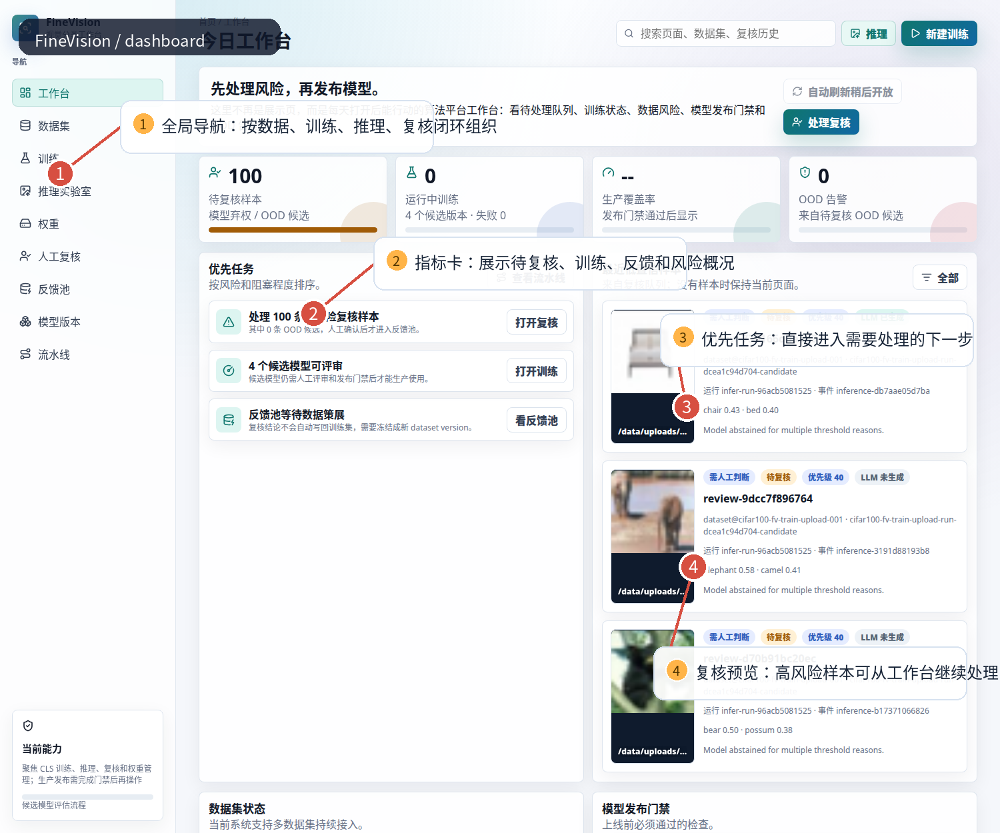
工作台是进入系统后的总览页面。
页面重点：
1 全局导航：按算法平台工作流组织模块。2 指标卡：展示待复核、训练、反馈和风险状态。3 优先任务：告诉用户当前最需要处理什么。4 复核预览：把高风险样本直接暴露在首页。推荐操作：
展示讲法：
这里不是普通预测页面，而是算法工作台。首页展示的是模型链路状态、复核压力和下一步动作。/datasets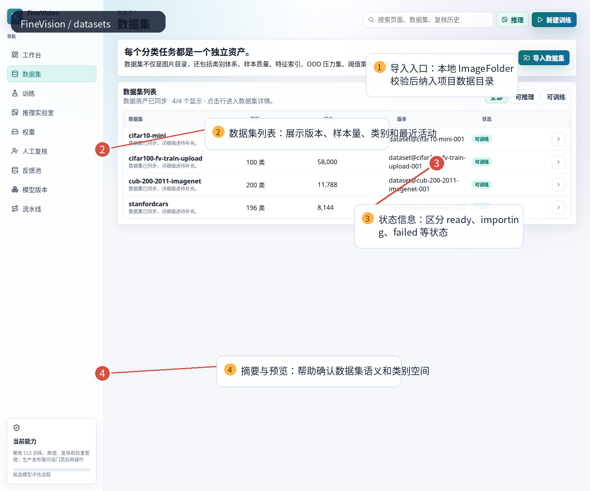
数据集列表用于管理所有已导入的数据资产。
页面重点：
1 导入入口：选择本地 ImageFolder 文件夹。2 数据集列表：展示 dataset
version、样本量、类别数和状态。3 生命周期状态：区分 ready、importing、failed。4 摘要与样本预览：帮助确认数据集语义。支持的数据集格式：
dataset_root/
train/
class_a/
xxx.jpg
class_b/
yyy.jpg
val/
class_a/
class_b/
test/
class_a/
class_b/如果没有显式 train / val / test，也可以使用：
dataset_root/
class_a/
xxx.jpg
class_b/
yyy.jpg系统会按类别目录解析，并生成内部 split。
导入时系统会做的事情：
/datasets/:datasetId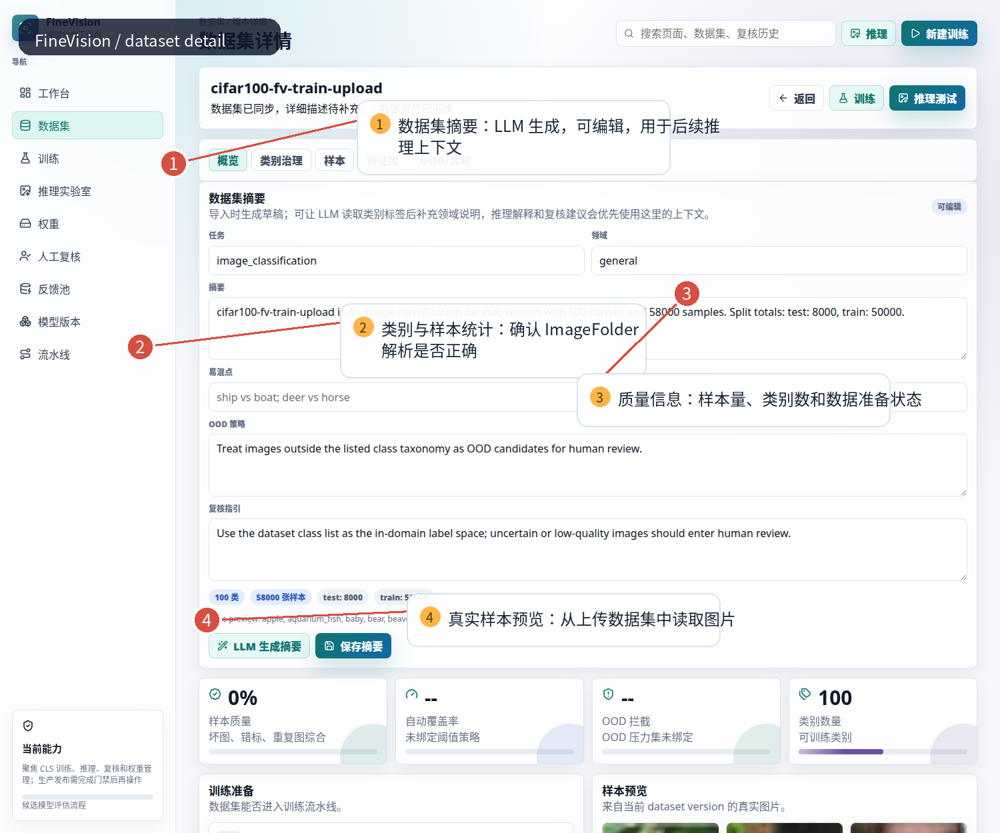
数据集详情页用于确认一个数据集版本是否可以进入训练和推理。
页面重点：
1 数据集摘要：根据类别标签生成，可编辑。2 类别与样本统计：检查 ImageFolder 是否解析正确。3 质量信息：展示样本量、类别数、split 和准备状态。4 真实样本预览：从上传的数据集中读取图片。数据集摘要的作用：
操作建议：
/weights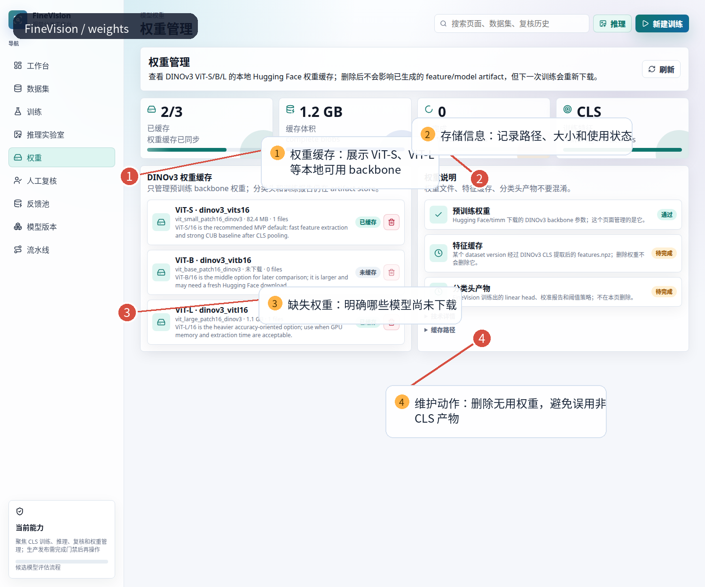
权重页用于管理 DINOv3 backbone 本地缓存。
页面重点：
1 当前可用权重：例如 ViT-S、ViT-L。2 权重路径和大小。3 未下载权重：避免训练时误以为可用。4 删除动作：清理不再使用的权重。当前推荐：
| 模型 | 用途 |
|---|---|
| ViT-S | 快速验证流程、调试数据集 |
| ViT-L | 最终评估、展示指标 |
| ViT-B | 可作为中间档，当前不是主链路 |
/training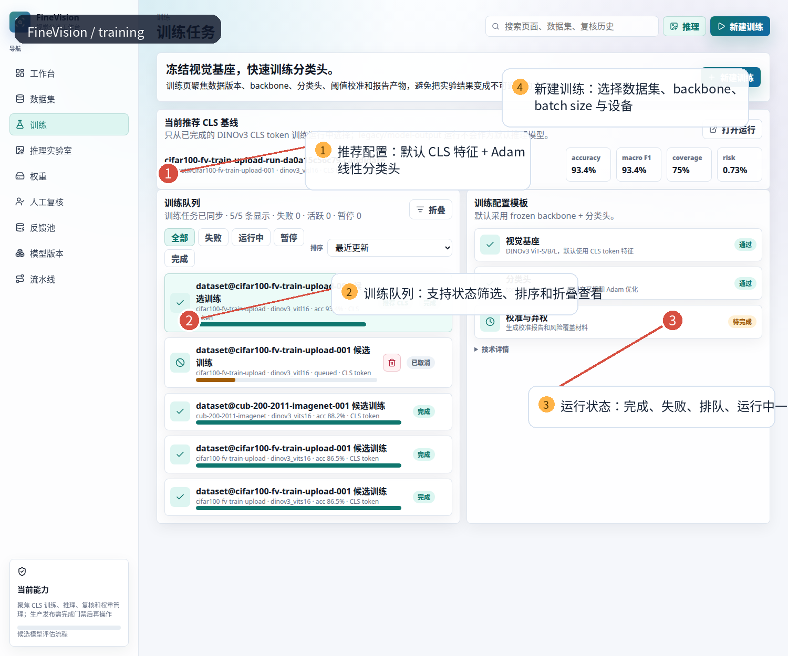
训练页用于创建训练任务和查看训练队列。
页面重点：
1 推荐配置：DINOv3 CLS 特征 + Adam 线性分类头。2 队列筛选：按全部、失败、运行中、完成过滤。3 状态标签：完成、失败、排队、运行中。4 新建训练：选择数据集、backbone、batch size
和设备。训练任务内部阶段：
dataset snapshot
-> feature extraction
-> classifier training
-> calibration
-> threshold strategy
-> model version registration注意事项：
/training/:runId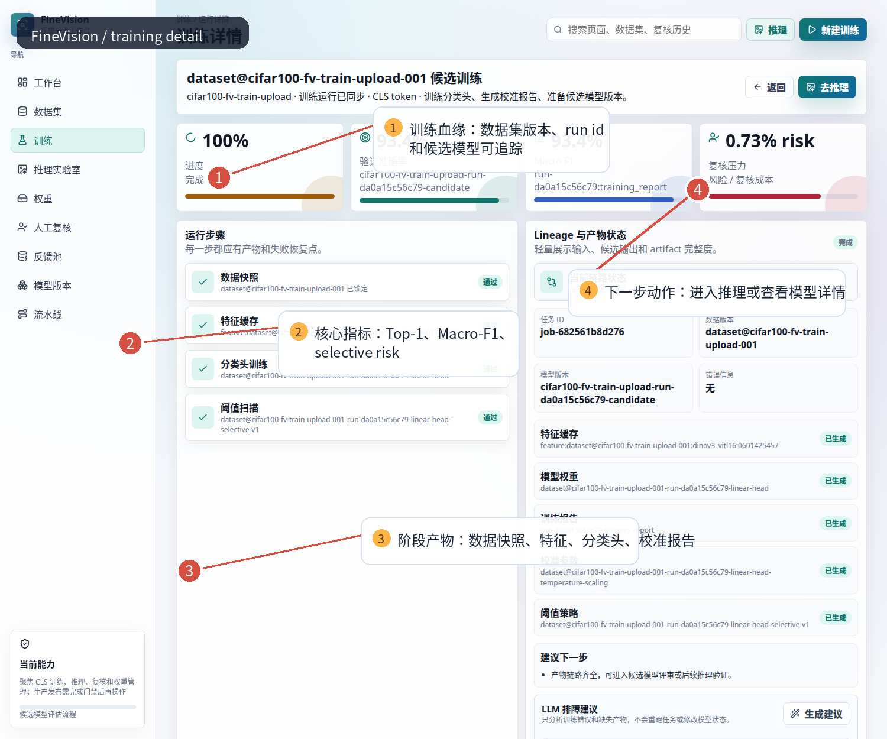
训练详情页用于审计一次训练的完整过程。
页面重点：
1 训练血缘：dataset version、run id、candidate
model。2 核心指标：Top-1、Macro-F1、selective risk。3
阶段产物：数据快照、特征缓存、分类头、校准报告、阈值策略。4 下一步动作：进入推理或模型详情。一次成功训练会产出：
| 产物 | 作用 |
|---|---|
| dataset snapshot | 锁定训练所用数据版本 |
| feature artifact | 保存 CLS 特征和 sample id 映射 |
| model artifact | 保存线性分类头和类别映射 |
| calibration report | 保存温度缩放和校准指标 |
| threshold strategy | 保存 accept/margin/OOD 阈值 |
| training report | 保存准确率、F1、配置和错误信息 |
当前 CIFAR-100 ViT-L 示例：
model_version: cifar100-fv-train-upload-run-da0a15c56c79-candidate
backbone: dinov3_vitl16
feature_pool: cls
head: torch_linear_adam
image_size: 448
top1 accuracy: 93.39%
macro F1: 93.37%
selective risk: 0.73%/inference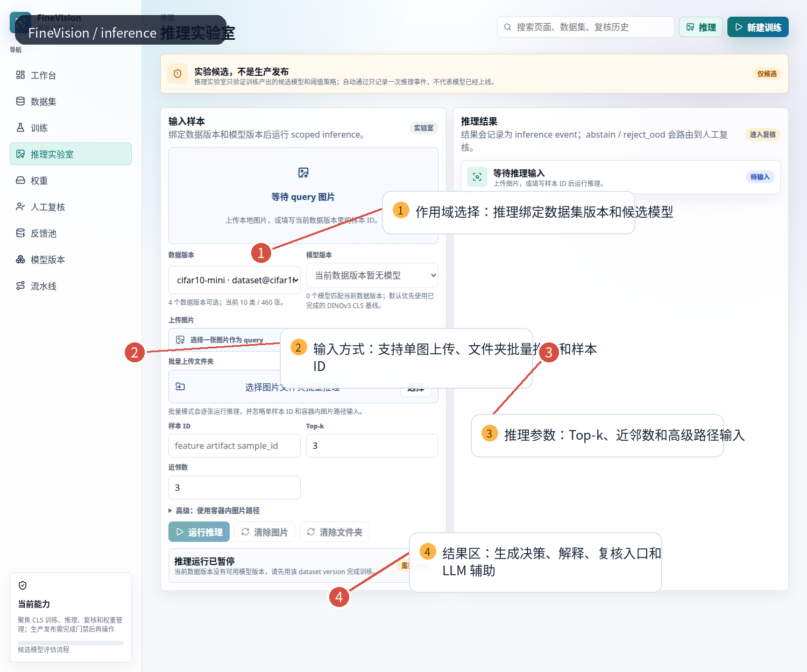
推理实验室用于验证候选模型在真实输入上的表现。
页面重点：
1 作用域选择：推理必须绑定 dataset version 和 model
version。2 输入方式：单图上传、文件夹批量推理、样本 ID。3 参数区：top-k、近邻数、高级路径输入。4 结果区：decision、top-k、解释、复核入口、LLM
辅助。推理会生成：
推荐演示：
/review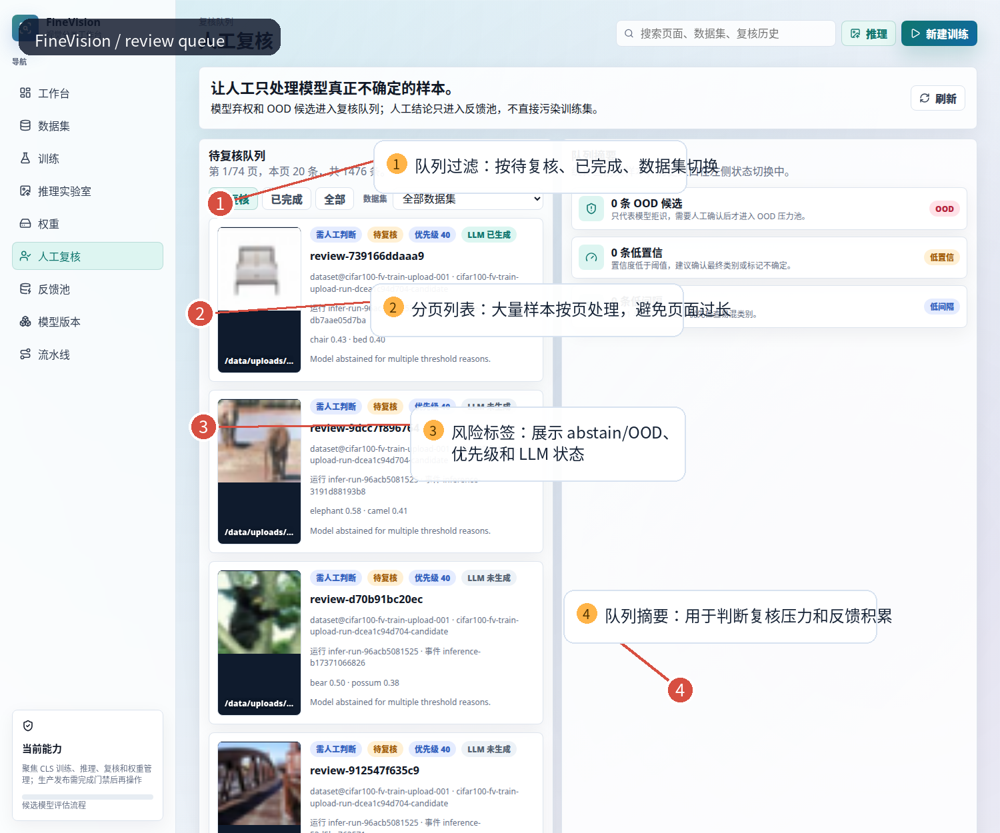
复核队列接收模型不确定或疑似 OOD 的样本。
页面重点：
1 状态过滤：待复核、已完成、全部。2 分页列表：适合批量推理后的大量样本。3 风险标签：显示 priority、decision、LLM 状态。4 队列摘要：查看复核压力。进入复核队列的规则：
accept -> 只记录 inference event
abstain -> 创建 review item
reject_ood -> 创建 review item批量推理时，每个 review item 会关联：
/review/:reviewItemId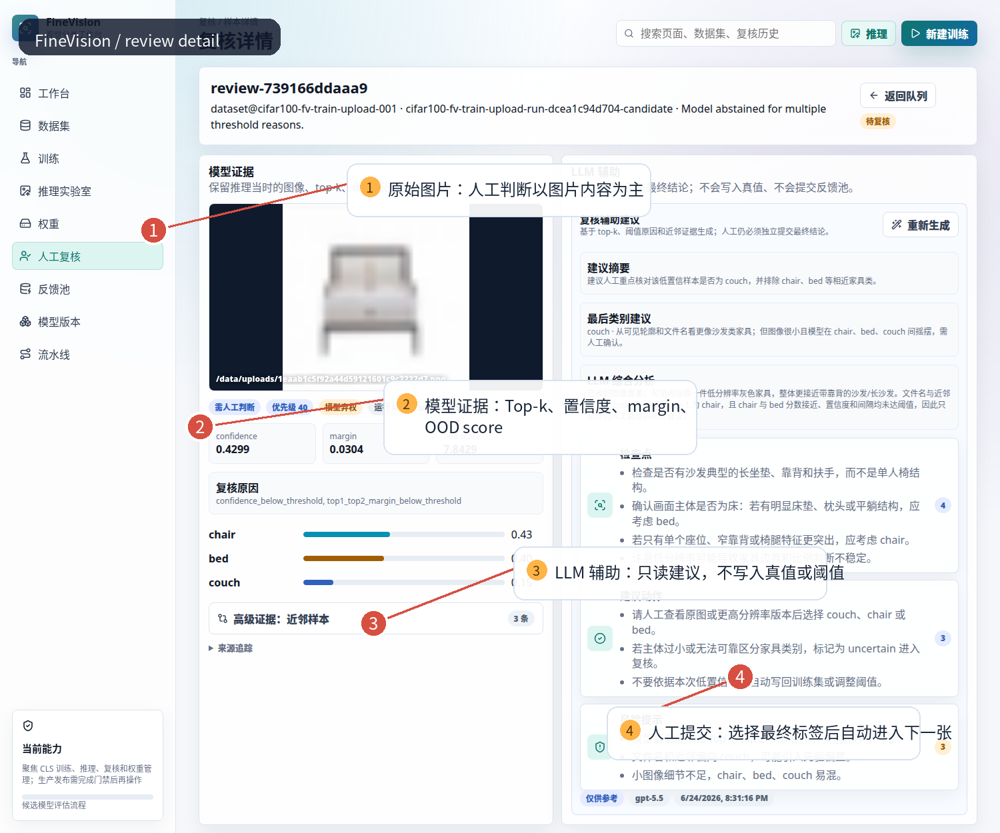
复核详情页是人工判断单张样本的核心页面。
页面重点：
1 原始图片：人工判断以图片内容为主。2 模型证据：top-k、confidence、margin、OOD score。3 LLM 辅助：只读建议，不写入真值或阈值。4 人工提交：选择最终标签后自动进入下一张。人工复核结论：
| 结论 | 进入哪里 | 说明 |
|---|---|---|
| corrected class | training_candidate | 后续可作为新 dataset version 候选 |
| OOD | ood_stress | 用于压力测试或 OOD 阈值策略 |
| bad image | bad_image | 坏图、损坏、不可判定图片 |
| uncertain | taxonomy_dispute | 类别边界不清，后续人工讨论 |
| ignore | ignore | 不进入后续数据闭环 |
重要原则：
人工最终结论才是反馈池输入。
LLM 建议不会自动提交。
模型 top-1 不能覆盖清晰图像证据。/feedback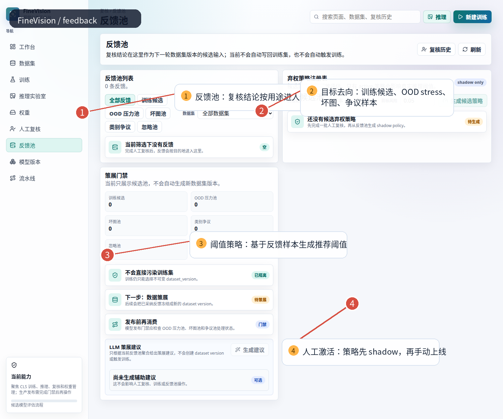
反馈池是人工复核结论的暂存区。
页面重点：
1 反馈列表：查看已经复核过的样本。2 目标去向：训练候选、OOD
stress、坏图、争议、忽略。3 阈值策略：基于反馈样本生成推荐阈值。4 人工激活：策略先 shadow，再手动上线。为什么反馈池不直接写回训练集：
/models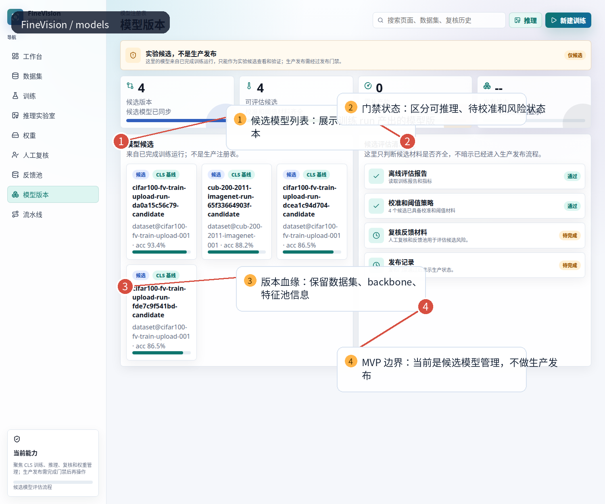
模型版本页用于管理训练产出的 candidate model。
页面重点：
1 候选模型列表。2 门禁状态。3 版本血缘。4 当前不是生产发布系统。模型版本记录：
/models/:modelId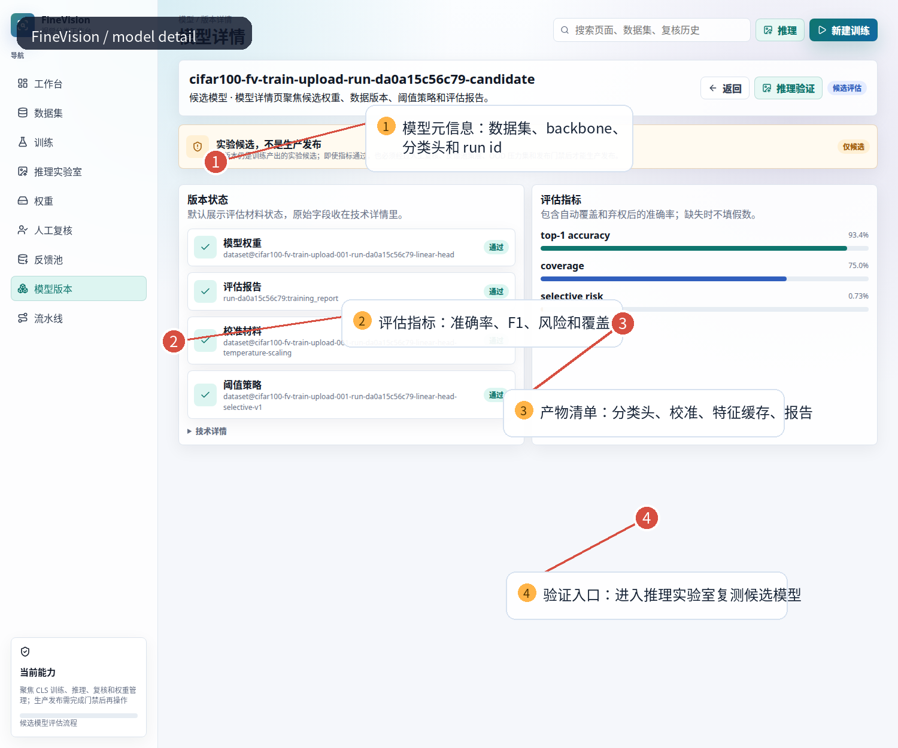
模型详情页用于查看某个 candidate model 的完整信息。
页面重点：
1 模型元信息。2 评估指标。3 产物清单。4 复测入口。讲解要点：
这里证明每个模型不是孤立文件，而是有训练血缘、指标、产物和阈值策略的候选版本。/pipelines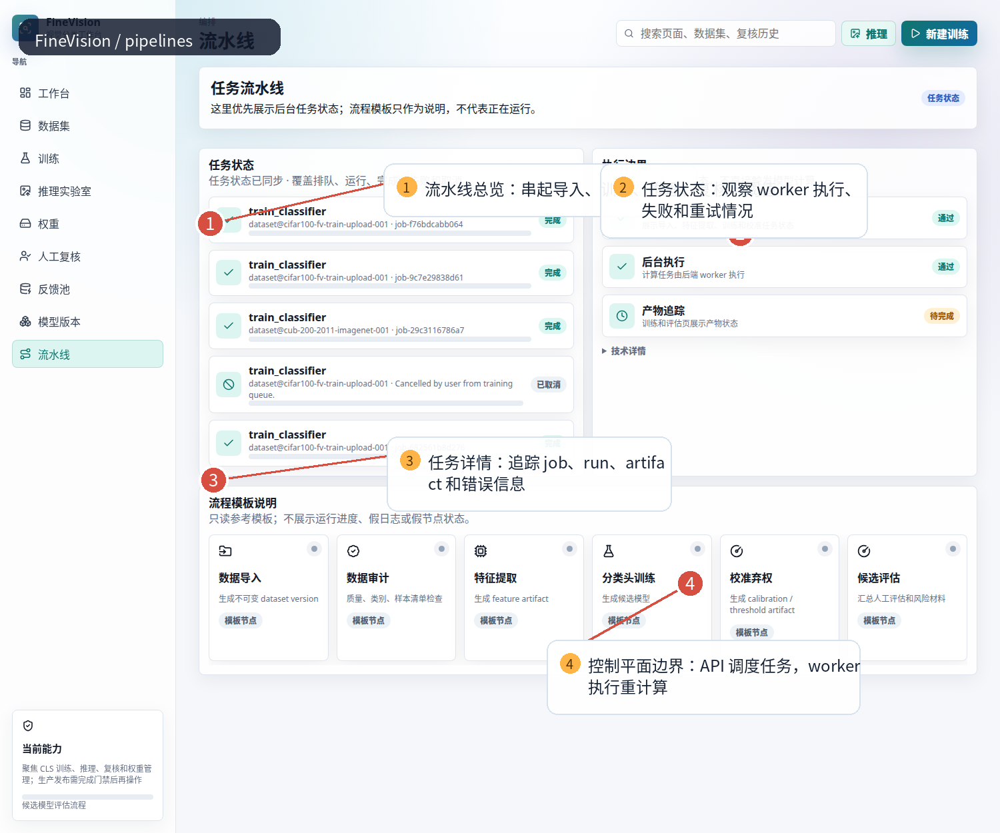
流水线页用于观察后台任务。
页面重点：
1 总览：串起导入、训练、推理、复核和阈值。2 任务状态：worker 执行、失败、重试。3 任务详情：job、run、artifact、错误信息。4 控制平面边界：API 调度，worker 计算。排错路径：
页面错误
-> 查看对应 run detail
-> 查看 pipeline job event
-> 查看 api / ml-worker docker logs
-> 检查 GPU、权重、数据路径和 artifactflowchart TB
Browser["浏览器 / React 前端"] --> API["FastAPI Control Plane"]
API --> DB["PostgreSQL 控制平面数据库"]
API --> ART["Artifact Storage / Docker Volume"]
API --> LLM["LLM Provider"]
API --> JOB["jobs 表"]
WORKER["ML Worker"] --> JOB
WORKER --> DB
WORKER --> ART
WORKER --> GPU["CUDA / PyTorch / timm"]
MIGRATE["Alembic migrate"] --> DBFineVision 的架构不是把所有东西塞进一个后端进程，而是拆成：
| 层 | 服务 | 职责 |
|---|---|---|
| 展示层 | frontend |
React/Vite 页面、路由、表单、状态展示 |
| 控制平面 | api |
轻量接口、元数据、复核、反馈、LLM、任务创建 |
| 计算平面 | ml-worker |
数据导入、特征提取、训练、校准、批量任务 |
| 迁移 | migrate |
Alembic 数据库迁移 |
| 数据库 | postgres |
元数据、状态、血缘、事件、策略 |
| DB 管理 | adminer |
本地数据库查看 |
核心原则：
API 负责快请求。
Worker 负责慢计算。
PostgreSQL 负责状态和关系。
Artifact storage 负责大文件。
GPU 只暴露给真正需要计算的服务。如果把训练、特征提取、批量推理都放进 API 请求里，会带来问题：
所以当前采用“模块化单体 + 独立 worker 进程”的方式。它不是过早拆成多个微服务，但已经把控制平面和计算平面隔离开。
Docker Compose 当前服务边界：
frontend -> 浏览器页面，端口 5173
api -> FastAPI，端口 8001，对外提供 /api/*
ml-worker -> 后台任务执行器，使用 GPU
migrate -> Alembic upgrade head
postgres -> 控制平面数据库，端口 5432
adminer -> 数据库查看工具，端口 8081GPU 配置：
api:
gpus: all
environment:
FINEVISION_DINOV3_DEVICE: cuda
ml-worker:
gpus: all
environment:
FINEVISION_DINOV3_DEVICE: cuda
FINEVISION_LINEAR_HEAD_DEVICE: cuda虽然 API 也可以访问 GPU，但原则上重计算应由 worker 执行。API 侧 GPU 主要服务于局部推理和工具函数兼容。
后端核心模块：
| 模块 | 作用 |
|---|---|
api/app.py |
FastAPI 路由定义 |
api/store.py |
dataset manifest / dataset card 本地适配 |
api/inference_store.py |
推理上下文、模型产物、阈值策略读取 |
api/review_store.py |
review item 和 feedback item 持久化 |
api/abstention_store.py |
阈值策略生成、shadow、激活、停用 |
api/llm.py |
LLM structured output、提示词、fallback |
ml_toolkit/features.py |
DINOv3 特征提取 |
ml_toolkit/training.py |
分类头训练 |
ml_toolkit/calibration.py |
temperature scaling |
ml_toolkit/thresholds.py |
阈值扫描 |
ml_toolkit/online_abstention.py |
风险约束弃权策略 |
worker/jobs.py |
后台 job 执行 |
数据集：
POST /api/datasets/import-imagefolder
GET /api/datasets
GET /api/datasets/{dataset_id}
GET /api/dataset-versions/{dataset_version_id}/sample-previews
POST /api/dataset-versions/{dataset_version_id}/dataset-card/generate
PUT /api/dataset-versions/{dataset_version_id}/dataset-card训练：
POST /api/training-runs
GET /api/training-runs
GET /api/training-runs/{run_id}
POST /api/training-runs/{run_id}/cancel
DELETE /api/training-runs/{run_id}推理：
POST /api/inference
POST /api/inference/upload
POST /api/inference/upload-folder
GET /api/inference-runs
GET /api/inference-runs/{run_id}复核与反馈：
GET /api/review-items
GET /api/review-items/{review_item_id}
POST /api/review-items/{review_item_id}/submit
POST /api/review-items/{review_item_id}/assist
GET /api/feedback-itemsLLM 与策略：
POST /api/llm/assist
POST /api/abstention-policies/propose
GET /api/abstention-policies
GET /api/abstention-policies/{policy_id}
POST /api/abstention-policies/{policy_id}/activate
POST /api/abstention-policies/{policy_id}/deactivateMVP 使用 PostgreSQL 作为唯一控制平面数据库。
核心表：
| 表 | 作用 |
|---|---|
datasets |
业务数据集 |
dataset_versions |
不可变数据集快照 |
artifacts |
统一产物注册表 |
jobs |
后台任务状态 |
job_events |
append-only 任务事件 |
training_runs |
训练运行 |
model_versions |
候选模型 |
inference_runs |
一批推理 |
inference_events |
单样本推理事件 |
review_items |
人工复核项 |
feedback_items |
复核反馈 |
abstention_policy_versions |
阈值策略版本 |
abstention_shadow_decisions |
shadow 策略回放记录 |
存储拆分：
PostgreSQL:
元数据、状态、关系、审计、策略
Artifact storage:
图片、manifest、features.npz、模型权重、校准报告、阈值报告
模型权重缓存:
HuggingFace / Torch cacheFineVision 不把大文件塞进数据库，而是用 artifact registry 记录：
常见 artifact：
| Artifact | 内容 |
|---|---|
dataset_manifest |
样本路径、类别、split、readiness |
dataset_card |
数据集摘要、领域、OOD policy、复核建议 |
feature_artifact |
CLS 特征、sample id、label 映射 |
model_artifact |
分类头权重、类别映射 |
calibration_report |
温度缩放、ECE、NLL、Brier |
threshold_strategy |
tau_conf、tau_margin、tau_ood |
training_report |
训练配置、指标、错误 |
前端采用 React + Vite + React Router。
真实路由：
<Route path="/" element={<DashboardPage />} />
<Route path="/datasets" element={<DatasetsPage />} />
<Route path="/datasets/:datasetId" element={<DatasetDetailPage />} />
<Route path="/training" element={<TrainingPage />} />
<Route path="/training/:runId" element={<TrainingDetailPage />} />
<Route path="/inference" element={<InferencePage />} />
<Route path="/weights" element={<WeightManagementPage />} />
<Route path="/review" element={<ReviewPage />} />
<Route path="/review/:reviewItemId" element={<ReviewDetailPage />} />
<Route path="/feedback" element={<FeedbackPage />} />
<Route path="/models" element={<ModelsPage />} />
<Route path="/models/:modelId" element={<ModelDetailPage />} />
<Route path="/pipelines" element={<PipelinesPage />} />前端设计原则：
候选、待复核、shadow only。当前训练主线：
ImageFolder
-> DatasetManifest
-> DINOv3 transform
-> DINOv3 CLS token
-> FeatureArtifact
-> Linear classifier head
-> Adam optimizer
-> Validation metrics
-> Temperature scaling
-> Threshold strategy
-> Candidate model version当前推荐配置：
| 配置 | 当前值 |
|---|---|
| feature_pool | cls |
| image_size | 448 |
| head | linear classifier |
| optimizer | Adam |
| calibration | temperature scaling |
| backbone small | dinov3_vits16 |
| backbone large | dinov3_vitl16 |
| device | cuda |
为什么使用 CLS：
为什么先不做 LoRA / full fine-tune：
单图推理流程：
sequenceDiagram
participant U as User
participant FE as Frontend
participant API as FastAPI
participant ML as Inference Toolkit
participant DB as PostgreSQL
participant RV as Review Queue
U->>FE: 上传图片
FE->>API: POST /api/inference/upload
API->>ML: 加载 model artifact / threshold strategy
ML-->>API: top-k / confidence / margin / OOD score / decision
API->>DB: 写入 inference_run / inference_event
alt abstain or reject_ood
API->>RV: 创建 review_item
else accept
API->>DB: 只保留 inference_event
end
API-->>FE: 返回推理结果与复核入口批量文件夹推理流程：
folder upload
-> 创建 inference_run
-> 遍历图片
-> 每张生成 inference_event
-> route_all_to_review 或按 decision 创建 review_item
-> 前端显示 batch summary
-> 复核队列按 inference_run / dataset version 追踪推理结果不会只返回 top-1，而是返回一组证据：
top_kconfidencemarginood_scorenearest_neighborsdecisiondecision_reasons决策规则：
if ood_score > tau_ood:
decision = "reject_ood"
elif confidence < tau_conf:
decision = "abstain"
elif margin < tau_margin:
decision = "abstain"
else:
decision = "accept"指标含义：
| 指标 | 中文解释 |
|---|---|
| confidence | 模型对 top-1 类别的校准后置信度 |
| margin | top-1 与 top-2 的分数差，越小说明越容易混淆 |
| OOD score | 样本偏离当前数据集分布的程度，越大越像分布外 |
| accept | 系统自动接受预测 |
| abstain | 模型不够确定，交给人工 |
| reject_ood | 疑似不属于当前数据集类别空间，交给人工确认 |
LLM 在 FineVision 中不是自动标注器，而是复核辅助员。
可用任务：
| task | 用途 |
|---|---|
inference_explanation |
解释推理结果为什么 accept / abstain / reject_ood |
review_assistance |
辅助人工复核一张图片 |
training_diagnosis |
根据训练状态和错误给出排障建议 |
feedback_curation |
根据反馈池给出数据策展建议 |
dataset_card_generation |
根据类别标签生成数据集摘要 |
LLM 输入上下文：
核心 system-style 约束：
你是 FineVision 的 LLM Assistant，只能提供 advisory-only 建议，
不能替代人工标签，不能调整生产阈值，不能把反馈直接写回训练集。
请用中文填写结构化字段；这些字段会被 JSON Schema 严格约束。视觉复核权重设计：
当收到真实图像像素时：
图像像素权重约 70%
文件名 / 数据集摘要权重约 15%
视觉模型 top-k / 置信度 / 近邻证据权重约 15%
模型 top-1 只能作为辅助，不能压过清晰可见的图像内容。OOD 约束：
如果可见内容不在 dataset_summary.class_preview 或数据集摘要描述范围内，
label 写 OOD 或 uncertain。
不要为了迎合模型输出而发明新类别。为什么这样设计：
LLM 使用 JSON Schema / structured outputs 约束输出。
输出字段：
{
"summary": "给操作员的一句话摘要",
"holistic_analysis": "综合图像、数据集、模型证据的初步判断",
"final_category_suggestion": {
"label": "建议类别 / OOD / uncertain",
"rationale": "建议理由"
},
"inspection_notes": ["人工应检查的视觉线索"],
"suggested_actions": ["安全下一步动作"],
"risk_flags": ["风险提示"],
"confidence": "low | medium | high"
}为什么不用纯自然语言：
当前 LLM 调用支持：
responses API。chat_completions fallback。disable_response_storage=true，减少供应商侧存储风险。配置示例：
FINEVISION_LLM_PROVIDER=OpenAI
FINEVISION_LLM_MODEL=gpt-5.5
FINEVISION_LLM_REVIEW_MODEL=gpt-5.5
FINEVISION_LLM_REASONING_EFFORT=high
FINEVISION_LLM_WIRE_API=responses
FINEVISION_LLM_STRUCTURED_OUTPUTS=true
FINEVISION_LLM_DISABLE_RESPONSE_STORAGE=true
FINEVISION_LLM_FALLBACK_MODELS=qwen-plusFineVision 当前采用第一阶段在线可弃权方案：风险约束阈值策略。
它的目标不是“准确率最高”，而是：
在自动接受错误率不超过目标风险的前提下，
尽可能提高自动处理覆盖率，
尽可能降低人工复核成本。形式化目标：
给定目标风险 r_target
在所有候选阈值 tau_conf, tau_margin, tau_ood 中搜索：
maximize auto_coverage(tau)
subject to selective_risk(tau) <= r_target其中：
selective_risk = accepted_errors / accepted_count
accept_coverage = accepted_count / total_count
auto_coverage = (accepted_count + rejected_ood_count) / total_count
review_rate = review_count / total_count阈值含义：
| 阈值 | 作用 |
|---|---|
tau_conf |
最低置信度，低于它就 abstain |
tau_margin |
最低 top1-top2 差距，低于它说明类别混淆 |
tau_ood |
OOD score 上限，高于它就 reject_ood |
阈值不是 LLM 调出来的，也不是手写拍脑袋。
更新来源：
搜索方式：
1. 从样本分数中取候选 tau_conf。
2. 从 margin 分布中取候选 tau_margin。
3. 从 OOD score 分布中取候选 tau_ood。
4. 枚举候选组合。
5. 对每组阈值回放历史样本。
6. 计算 selective risk、coverage、review cost、OOD recall。
7. 过滤掉超过目标风险的组合。
8. 在剩余组合中选 auto coverage 最高的。策略生命周期：
feedback samples
-> propose policy
-> status = shadow
-> 回放已有 inference events
-> 记录 abstention_shadow_decisions
-> 用户查看指标
-> 用户填写激活理由
-> status = active激活保护：
“可弃权”指模型可以选择不自动给出最终类别，而是把样本交给人工或 OOD 流程。
FineVision 的策略属于在线可弃权的工程化第一阶段：
它不是 bandit/regret-minimization 那类复杂在线学习算法，但已经具备在线更新策略的闭环。
当前不做：
当前重点是：
CLS 训练链路稳定
推理-复核-反馈闭环稳定
阈值策略可解释、可量化、可回放评估 FineVision 的风险约束 selective classification / OOD rejection 策略是否有实际价值。
核心问题：
系统能不能在控制自动错误率的同时，
尽可能多地自动处理样本，
并把明显 OOD 样本拒绝掉？数据集：
模型：
dinov3_vits16dinov3_vitl16策略：
风险目标：
| 指标 | 含义 | 方向 |
|---|---|---|
| Raw accuracy | 不弃权时的整体准确率 | 越高越好 |
| Accepted accuracy | 自动接受样本中的准确率 | 越高越好 |
| Selective risk | 自动接受样本中的错误率 | 越低越好 |
| Accept coverage | 被接受为正常分类的比例 | 结合风险看 |
| Auto coverage | accept + reject_ood 的自动处理比例 | 越高越好 |
| Review rate | 进入人工复核的比例 | 越低越好 |
| OOD recall | OOD 样本被成功拒绝的比例 | 越高越好 |
| OOD accept rate | OOD 被误当正常类别接受的比例 | 越低越好 |
| Model | Target risk | Raw accuracy | Best accepted accuracy | Selective risk | Coverage | Review rate |
|---|---|---|---|---|---|---|
| ViT-S | 1% | 87.80% | 99.17% | 0.83% | 60.00% | 40.00% |
| ViT-S | 5% | 87.80% | 95.00% | 5.00% | 82.00% | 18.00% |
| ViT-L | 1% | 93.10% | 99.08% | 0.92% | 76.00% | 24.00% |
| ViT-L | 5% | 93.10% | 95.21% | 4.79% | 96.00% | 4.00% |
结论：
| Model | Target risk | Best policy | Accepted accuracy | Selective risk | Auto coverage | Review rate | OOD recall | OOD accept rate |
|---|---|---|---|---|---|---|---|---|
| ViT-S | 1% | conf + margin + OOD | 99.15% | 0.85% | 79.60% | 20.40% | 100.00% | 0.00% |
| ViT-S | 5% | conf + margin + OOD | 95.00% | 5.00% | 91.00% | 9.00% | 100.00% | 0.00% |
| ViT-L | 1% | conf + margin + OOD | 99.30% | 0.70% | 87.45% | 12.55% | 100.00% | 0.00% |
| ViT-L | 5% | conf + margin + OOD | 95.03% | 4.97% | 98.30% | 1.70% | 100.00% | 0.00% |
结论：
实现并评估了一个风险约束 selective classification / OOD rejection 策略。
基于 CIFAR-100 + SVHN 构建自动化 benchmark，量化 selective risk、auto coverage、
OOD recall、OOD accept rate 和人工复核成本。DINOv3 ViT-L 在 1% 风险目标下达到
87.45% 自动处理率、100% OOD recall 和 0% OOD accept rate；在 5% 风险目标下达到
98.30% 自动处理率，人工复核率降至 1.70%。本附录用于展示和技术追问。主体文档讲“为什么”和“怎么用”，附录讲“系统具体有哪些接口、表、页面和容器”。
所有业务接口统一挂在 FastAPI api
服务下，本地默认地址：
http://localhost:8001接口分组：
| 分组 | 作用 |
|---|---|
| Health | 服务健康检查 |
| Dataset | 数据集导入、详情、样本预览、dataset card |
| Job | 后台任务创建、列表、取消 |
| Training | 训练任务创建、暂停、恢复、取消、删除 |
| Weights | DINOv3 权重缓存查看和删除 |
| Inference | 单图、路径、文件夹推理 |
| Review | 人工复核队列、详情、提交、LLM 辅助 |
| Feedback | 反馈池查询 |
| LLM | 通用 LLM 辅助 |
| Abstention Policy | 风险阈值策略提议、查看、激活、停用、shadow 决策 |
| Method | Path | 作用 | 主要返回 |
|---|---|---|---|
| GET | /api/health |
健康检查 | {status: "ok"} |
| Method | Path | 作用 | 关键参数 | 主要副作用 |
|---|---|---|---|---|
| GET | /api/datasets |
获取数据集列表 | 无 | 无 |
| GET | /api/datasets/{dataset_id} |
获取数据集详情 | dataset_id |
无 |
| POST | /api/datasets/import-imagefolder |
从容器可访问路径导入 ImageFolder | path, dataset_id,
dataset_version_id |
创建 dataset / dataset_version / manifest artifact |
| POST | /api/datasets/upload-imagefolder |
上传本地文件夹导入 ImageFolder | multipart files, dataset_id |
校验图片、复制到 imported datasets、创建 manifest |
| GET | /api/dataset-versions/{dataset_version_id}/readiness |
查看数据集准备度 | dataset_version_id |
无 |
| GET | /api/dataset-versions/{dataset_version_id}/sample-previews |
获取样本预览 | limit |
无 |
| GET | /api/dataset-versions/{dataset_version_id}/samples/{sample_id}/image |
读取样本图片 | sample_id |
无 |
| GET | /api/dataset-versions/{dataset_version_id}/card |
获取 dataset card | dataset_version_id |
无 |
| PUT | /api/dataset-versions/{dataset_version_id}/card |
编辑 dataset card | task, domain, summary,
known_confusions, ood_policy,
review_guidance |
更新 dataset card artifact |
| POST | /api/dataset-versions/{dataset_version_id}/card/generate |
用 LLM 生成 dataset card | dataset_version_id |
更新 dataset card artifact |
Dataset API 设计要点：
dataset_version_id，不是只绑定
dataset_id。dataset card 是可编辑上下文，不是训练标签。| Method | Path | 作用 | 关键参数 | 主要副作用 |
|---|---|---|---|---|
| POST | /api/jobs |
创建后台 job | job_type, payload,
priority |
写入 jobs |
| GET | /api/jobs |
获取 job 列表 | 可按状态过滤 | 无 |
| GET | /api/jobs/{job_id} |
获取 job 详情 | job_id |
无 |
| POST | /api/jobs/{job_id}/cancel |
取消 job | job_id |
job 状态变为 cancelled |
Job 状态：
queued -> running -> succeeded
queued/running -> failed
queued/running -> cancelled
running -> paused -> queued/running| Method | Path | 作用 | 关键参数 | 主要副作用 |
|---|---|---|---|---|
| POST | /api/training-runs |
创建训练任务 | dataset_version_id, backbone_id,
extractor_config, head_config |
创建 job 和 training_run |
| GET | /api/training-runs |
获取训练队列 | status / dataset filter | 无 |
| GET | /api/training-runs/{run_id} |
获取训练详情 | run_id |
无 |
| POST | /api/training-runs/{run_id}/pause |
暂停训练任务 | run_id |
job / run 标记 paused |
| POST | /api/training-runs/{run_id}/resume |
恢复训练任务 | run_id |
job / run 回到 queued |
| POST | /api/training-runs/{run_id}/cancel |
取消训练任务 | run_id |
job / run 标记 cancelled |
| DELETE | /api/training-runs/{run_id} |
删除训练记录 | run_id |
删除 run 记录，保留或清理策略按实现处理 |
训练任务创建后，真正计算由 ml-worker 执行。API
只负责创建任务、记录状态和返回详情。
| Method | Path | 作用 | 关键参数 | 主要副作用 |
|---|---|---|---|---|
| GET | /api/model-weights |
查看 DINOv3 权重缓存 | 无 | 无 |
| DELETE | /api/model-weights/{preset} |
删除某个权重缓存 | preset，如 dinov3_vits |
删除对应缓存文件 |
权重 API 用于解释训练为什么快或慢：如果权重已经在 HuggingFace / Torch cache 中，训练时不需要重复下载。
| Method | Path | 作用 | 关键参数 | 主要副作用 |
|---|---|---|---|---|
| POST | /api/inference |
使用样本 ID 或容器路径推理 | dataset_version_id, model_version_id,
sample_id / image_path, top_k,
thresholds |
写入 inference_run / inference_event，必要时创建 review_item |
| POST | /api/inference/upload |
上传单张图片推理 | multipart image, dataset_version_id,
model_version_id, top_k |
保存上传图片、写 inference_event、可创建 review_item |
| POST | /api/inference/upload-folder |
上传文件夹批量推理 | multipart files, dataset_version_id,
model_version_id, route_all_to_review |
创建 batch inference_run，多条 inference_event，多条 review_item |
推理请求可以覆盖阈值：
| 参数 | 作用 |
|---|---|
accept_threshold |
临时覆盖 tau_conf |
margin_threshold |
临时覆盖 tau_margin |
ood_distance_threshold |
临时覆盖 tau_ood |
route_all_to_review |
文件夹推理时是否全部进入复核 |
| Method | Path | 作用 | 关键参数 | 主要副作用 |
|---|---|---|---|---|
| GET | /api/review-items |
获取复核队列 | status, dataset_id, limit,
offset |
无 |
| GET | /api/review-items/{review_item_id} |
获取复核详情 | review_item_id |
无 |
| POST | /api/review-items/{review_item_id}/submit |
提交人工复核结论 | final_outcome, final_label,
reviewer_note |
更新 review_item，创建 feedback_item |
| POST | /api/review-items/{review_item_id}/assist |
为复核项生成 LLM 辅助 | review_item_id |
更新 assistance_metadata |
Review 状态：
| 状态 | 含义 |
|---|---|
pending |
待复核 |
submitted |
已提交人工结论 |
feedbacked |
已写入反馈池 |
skipped |
跳过 |
disputed |
有争议 |
| Method | Path | 作用 | 关键参数 | 主要返回 |
|---|---|---|---|---|
| GET | /api/feedback-items |
查询反馈池 | destination, dataset_id,
limit |
feedback item 列表 |
Feedback destination：
| destination | 含义 |
|---|---|
training_candidate |
可作为下一轮数据集候选 |
ood_stress |
OOD 压力测试候选 |
bad_image |
坏图池 |
taxonomy_dispute |
类别争议池 |
ignore |
忽略池 |
| Method | Path | 作用 | 关键参数 | 主要返回 |
|---|---|---|---|---|
| POST | /api/llm/assist |
通用 LLM 辅助 | task, context |
structured assistance |
支持任务：
| task | 用途 |
|---|---|
inference_explanation |
解释推理结果 |
review_assistance |
辅助人工复核 |
training_diagnosis |
训练排障 |
feedback_curation |
反馈池策展建议 |
LLM 返回字段：
| 字段 | 含义 |
|---|---|
summary |
一句话摘要 |
holistic_analysis |
综合分析 |
final_category_suggestion.label |
最后类别建议 |
final_category_suggestion.rationale |
类别建议理由 |
inspection_notes |
人工检查点 |
suggested_actions |
建议动作 |
risk_flags |
风险提示 |
confidence |
LLM 对建议的自评置信度 |
| Method | Path | 作用 | 关键参数 | 主要副作用 |
|---|---|---|---|---|
| POST | /api/abstention-policies/propose |
基于反馈样本提议阈值策略 | dataset_version_id, model_version_id,
target_selective_risk |
创建 shadow policy |
| GET | /api/abstention-policies |
查询策略列表 | dataset_version_id, model_version_id,
status |
无 |
| GET | /api/abstention-policies/{policy_id} |
查看策略详情 | policy_id |
无 |
| POST | /api/abstention-policies/{policy_id}/activate |
激活策略 | activation_reason, activated_by |
当前策略变 active，旧策略 superseded |
| POST | /api/abstention-policies/{policy_id}/deactivate |
停用策略 | deactivation_reason |
策略变 deactivated |
| GET | /api/abstention-policies/{policy_id}/shadow-decisions |
查看 shadow 决策 | policy_id, limit |
无 |
策略字段：
| 字段 | 含义 |
|---|---|
target_selective_risk |
目标自动接受错误率 |
tau_conf |
置信度阈值 |
tau_margin |
top1-top2 间隔阈值 |
tau_ood |
OOD 阈值 |
source_feedback_count |
用于搜索阈值的反馈样本数 |
metrics |
replay 后的风险、覆盖率、复核率等指标 |
selection_config |
阈值搜索配置 |
| 表 | 主要职责 |
|---|---|
datasets |
数据集业务实体 |
dataset_versions |
不可变数据集版本 |
artifacts |
文件产物注册表 |
jobs |
后台任务状态 |
job_events |
后台任务事件日志 |
training_runs |
训练运行记录 |
model_versions |
候选模型版本 |
inference_runs |
一批推理记录 |
inference_events |
单个样本推理记录 |
review_items |
人工复核项 |
feedback_items |
复核后的反馈池 |
abstention_policy_versions |
风险阈值策略版本 |
abstention_shadow_decisions |
shadow 策略回放结果 |
datasets 字段说明| 字段 | 类型 | 说明 |
|---|---|---|
id |
UUID | 主键 |
dataset_key |
text | 业务可读 id，唯一 |
name |
text | 数据集名称 |
description |
text | 描述 |
domain |
text | 领域，例如 birds、cifar、plant disease |
status |
text | draft / ready / archived |
created_at |
timestamptz | 创建时间 |
updated_at |
timestamptz | 更新时间 |
dataset_versions 字段说明| 字段 | 类型 | 说明 |
|---|---|---|
id |
UUID | 主键 |
dataset_id |
UUID | 所属 dataset |
version_key |
text | 数据集版本业务 id，唯一 |
root_uri |
text | 数据集版本根路径 |
sample_count |
integer | 样本数 |
class_count |
integer | 类别数 |
split_summary |
JSONB | train/val/test 分布 |
readiness_status |
text | 数据准备状态 |
readiness_report |
JSONB | 准备度报告 |
manifest_artifact_id |
UUID | manifest artifact |
created_by_job_id |
UUID | 创建它的 job |
created_at |
timestamptz | 创建时间 |
artifacts 字段说明| 字段 | 类型 | 说明 |
|---|---|---|
id |
UUID | 主键 |
artifact_key |
text | 业务可读 artifact id |
artifact_type |
text | manifest、feature、model、report 等 |
dataset_id |
UUID | 关联数据集 |
dataset_version_id |
UUID | 关联数据集版本 |
job_id |
UUID | 产出该 artifact 的 job |
uri |
text | 文件路径或对象存储 URI |
checksum |
text | 校验和 |
content_type |
text | 文件类型 |
size_bytes |
bigint | 文件大小 |
artifact_metadata |
JSONB | 结构化元数据 |
created_at |
timestamptz | 创建时间 |
jobs 与 job_events 字段说明jobs：
| 字段 | 类型 | 说明 |
|---|---|---|
id |
UUID | 主键 |
job_key |
text | 业务 id，唯一 |
job_type |
text | 任务类型，如 import、train |
status |
text | queued / paused / running /
succeeded / failed /
cancelled |
payload |
JSONB | 任务输入 |
result |
JSONB | 任务结果 |
error_message |
text | 错误信息 |
priority |
integer | 优先级 |
attempt_count |
integer | 已尝试次数 |
max_attempts |
integer | 最大重试次数 |
lease_owner |
text | 当前 worker |
lease_expires_at |
timestamptz | 租约过期时间 |
created_at / queued_at /
started_at / finished_at /
updated_at |
timestamptz | 生命周期时间 |
job_events：
| 字段 | 类型 | 说明 |
|---|---|---|
id |
UUID | 主键 |
job_id |
UUID | 所属 job |
event_type |
text | 事件类型 |
message |
text | 可读消息 |
payload |
JSONB | 事件细节 |
created_at |
timestamptz | 事件时间 |
training_runs 字段说明| 字段 | 类型 | 说明 |
|---|---|---|
id |
UUID | 主键 |
run_key |
text | 训练 run 业务 id |
job_id |
UUID | 对应后台 job |
dataset_id |
UUID | 数据集 |
dataset_version_id |
UUID | 数据集版本 |
status |
text | queued / paused / running /
succeeded / failed /
cancelled |
backbone_id |
text | DINOv3 preset |
extractor_config |
JSONB | 特征提取配置 |
head_config |
JSONB | 分类头配置 |
feature_artifact_id |
UUID | 特征 artifact |
model_artifact_id |
UUID | 模型 artifact |
report_artifact_id |
UUID | 训练报告 |
calibration_artifact_id |
UUID | 校准报告 |
threshold_strategy_artifact_id |
UUID | 阈值策略 artifact |
metrics |
JSONB | accuracy、F1、risk 等 |
error_message |
text | 失败原因 |
created_at / started_at /
finished_at / updated_at |
timestamptz | 生命周期时间 |
model_versions 字段说明| 字段 | 类型 | 说明 |
|---|---|---|
id |
UUID | 主键 |
model_key |
text | 模型版本业务 id |
dataset_id |
UUID | 数据集 |
dataset_version_id |
UUID | 数据集版本 |
training_run_id |
UUID | 来源训练 run |
status |
text | candidate / staging /
production / archived /
failed |
model_artifact_id |
UUID | 模型权重 artifact |
calibration_artifact_id |
UUID | 校准 artifact |
threshold_strategy_artifact_id |
UUID | 阈值策略 artifact |
metrics |
JSONB | 模型指标 |
created_at / updated_at |
timestamptz | 时间 |
当前 MVP 主要使用 candidate，不强调 production
发布。
inference_runs 与 inference_events
字段说明inference_runs：
| 字段 | 类型 | 说明 |
|---|---|---|
id |
UUID | 主键 |
run_key |
text | 推理批次业务 id |
dataset_id |
UUID | 数据集 |
dataset_version_id |
UUID | 数据集版本 |
model_version_id |
UUID | 模型版本 |
run_type |
text | single / upload /
upload_folder |
status |
text | running / succeeded /
partial_failed / failed |
item_count |
integer | 推理图片数 |
review_item_count |
integer | 进入复核数 |
applied_policy_key |
text | 应用的策略 id |
applied_policy_source |
text | 策略来源 |
threshold_snapshot |
JSONB | 推理时阈值快照 |
request_payload |
JSONB | 请求参数 |
summary |
JSONB | 批次摘要 |
created_at / updated_at /
finished_at |
timestamptz | 时间 |
inference_events：
| 字段 | 类型 | 说明 |
|---|---|---|
id |
UUID | 主键 |
event_key |
text | 单样本推理事件 id |
inference_run_id |
UUID | 所属批次 |
dataset_id / dataset_version_id /
model_version_id |
UUID | 推理作用域 |
model_status |
text | 模型状态 |
model_artifact_id |
UUID | 模型 artifact |
feature_artifact_id |
UUID | 特征 artifact |
threshold_strategy_artifact_id |
UUID | 阈值策略 artifact |
input_type |
text | sample / image_path /
upload |
input_ref |
text | 输入图片路径或引用 |
sample_id |
text | 数据集样本 id |
decision |
text | accept / abstain /
reject_ood |
confidence |
float | 置信度 |
margin |
float | top1-top2 margin |
ood_score |
float | OOD 分数 |
reasons |
JSONB | 决策原因 |
request_payload |
JSONB | 请求快照 |
result_payload |
JSONB | 推理结果快照 |
created_at |
timestamptz | 创建时间 |
review_items 与 feedback_items
字段说明review_items：
| 字段 | 类型 | 说明 |
|---|---|---|
id |
UUID | 主键 |
review_key |
text | 复核项业务 id |
inference_event_id |
UUID | 来源推理事件，唯一 |
inference_run_id |
UUID | 来源推理批次 |
dataset_id / dataset_version_id /
model_version_id |
UUID | 作用域 |
sample_id |
text | 样本 id |
input_ref |
text | 图片引用 |
status |
text | pending / submitted /
feedbacked / skipped /
disputed |
risk_type |
text | low_confidence / low_margin /
ood_candidate / mixed |
priority |
integer | 复核优先级 |
reason |
text | 可读复核原因 |
reason_codes |
JSONB | 机器可读原因 |
context |
JSONB | top-k、阈值、近邻、图像等上下文 |
assistance_metadata |
JSONB | LLM 辅助结果 |
assigned_to |
text | 分配给谁 |
submitted_at / feedbacked_at |
timestamptz | 提交和反馈时间 |
completed_by |
text | 完成人 |
created_at / updated_at |
timestamptz | 时间 |
feedback_items：
| 字段 | 类型 | 说明 |
|---|---|---|
id |
UUID | 主键 |
feedback_key |
text | 反馈业务 id |
review_item_id |
UUID | 来源复核项，唯一 |
inference_event_id |
UUID | 来源推理事件 |
inference_run_id |
UUID | 来源推理批次 |
dataset_id / dataset_version_id /
model_version_id |
UUID | 作用域 |
sample_id |
text | 样本 id |
final_label |
text | 人工最终类别 |
final_outcome |
text | confirmed_label / corrected_label /
ood / bad_image / uncertain /
ignore |
destination |
text | training_candidate / ood_stress /
bad_image / taxonomy_dispute /
ignore |
reviewer_note |
text | 复核备注 |
feedback_metadata |
JSONB | 反馈上下文 |
created_by |
text | 创建人 |
created_at |
timestamptz | 创建时间 |
abstention_policy_versions 与
abstention_shadow_decisions 字段说明abstention_policy_versions：
| 字段 | 类型 | 说明 |
|---|---|---|
id |
UUID | 主键 |
policy_key |
text | 策略业务 id |
dataset_id / dataset_version_id /
model_version_id |
UUID | 策略作用域 |
status |
text | shadow / candidate / active /
superseded / deactivated /
archived |
target_selective_risk |
float | 目标 selective risk |
tau_conf |
float | 置信度阈值 |
tau_margin |
float | margin 阈值 |
tau_ood |
float | OOD 阈值 |
source_feedback_count |
integer | 来源反馈样本数 |
metrics |
JSONB | 策略指标 |
selection_config |
JSONB | 搜索配置 |
created_by |
text | 创建人 |
activated_by / activation_reason /
activated_at |
text/timestamptz | 激活信息 |
deactivated_by / deactivation_reason /
deactivated_at |
text/timestamptz | 停用信息 |
created_at / updated_at |
timestamptz | 时间 |
abstention_shadow_decisions：
| 字段 | 类型 | 说明 |
|---|---|---|
id |
UUID | 主键 |
policy_version_id |
UUID | 策略版本 |
inference_event_id |
UUID | 回放的推理事件 |
current_decision |
text | 当前策略决策 |
shadow_decision |
text | shadow 策略决策 |
decision_diff |
text | 决策差异类型 |
score_snapshot |
JSONB | 回放时分数快照 |
created_at |
timestamptz | 创建时间 |
| 路由 | 页面组件 | 标题 | 面包屑 |
|---|---|---|---|
/ |
DashboardPage |
今日工作台 | 首页 / 工作台 |
/dashboard |
redirect / |
今日工作台 | 首页 / 工作台 |
/datasets |
DatasetsPage |
数据集 | 数据资产 |
/datasets/:datasetId |
DatasetDetailPage |
数据集详情 | 数据集 / 版本详情 |
/training |
TrainingPage |
训练任务 | 训练 |
/training/:runId |
TrainingDetailPage |
训练详情 | 训练 / 运行详情 |
/inference |
InferencePage |
推理实验室 | 推理 |
/weights |
WeightManagementPage |
权重管理 | 模型权重 |
/review |
ReviewPage |
人工复核 | 复核队列 |
/review/:reviewItemId |
ReviewDetailPage |
复核详情 | 复核 / 样本详情 |
/feedback |
FeedbackPage |
反馈池 | 复核 / 反馈池 |
/models |
ModelsPage |
模型版本 | 模型注册表 |
/models/:modelId |
ModelDetailPage |
模型详情 | 模型 / 版本详情 |
/pipelines |
PipelinesPage |
流水线 | 编排 |
/pipelines/:pipelineRunId |
PipelineRunPage |
流水线运行 | 流水线 / 运行详情 |
Legacy query 兼容：
| 旧入口 | 新路由 |
|---|---|
?page=dashboard |
/ |
?page=datasets |
/datasets |
?page=training |
/training |
?page=inference |
/inference |
?page=review |
/review |
?page=feedback |
/feedback |
?page=models |
/models |
?page=pipelines |
/pipelines |
| 容器 | 镜像 / Dockerfile | 端口 | 是否需要 GPU | 职责 |
|---|---|---|---|---|
frontend |
frontend/Dockerfile |
5173:5173 |
否 | React/Vite 前端，代理 API |
api |
Dockerfile.api |
8001:8000 |
可用 GPU | FastAPI 控制平面，提供所有 /api/* |
ml-worker |
Dockerfile.worker |
无 HTTP 端口 | 是 | 后台任务，数据导入、特征提取、训练、校准 |
migrate |
Dockerfile.migrate |
无 | 否 | 启动时执行 alembic upgrade head |
postgres |
postgres:16-alpine |
5432:5432 |
否 | 控制平面数据库 |
adminer |
adminer:4 |
8081:8080 |
否 | 数据库查看工具 |
api 关键环境变量：
| 变量 | 作用 |
|---|---|
DATABASE_URL |
PostgreSQL 连接 |
FINEVISION_METADATA_DIR |
元数据目录 |
FINEVISION_ARTIFACT_DIR |
artifact 目录 |
FINEVISION_UPLOAD_DIR |
上传图片目录 |
FINEVISION_IMPORTED_DATASET_DIR |
导入数据集目录 |
FINEVISION_DINOV3_DEVICE |
DINOv3 推理设备，当前为 cuda |
ml-worker 关键环境变量：
| 变量 | 作用 |
|---|---|
DATABASE_URL |
PostgreSQL 连接 |
FINEVISION_ARTIFACT_DIR |
写入训练产物 |
FINEVISION_IMPORTED_DATASET_DIR |
读取导入数据 |
FINEVISION_DINOV3_DEVICE |
特征提取设备 |
FINEVISION_LINEAR_HEAD_DEVICE |
分类头训练设备 |
共享 volumes：
| Volume | 作用 |
|---|---|
finevision-metadata |
本地元数据 |
finevision-artifacts |
features、model、report 等产物 |
finevision-uploads |
上传推理图片 |
finevision-imported-datasets |
导入后的数据集 |
finevision-postgres |
PostgreSQL 数据 |
${HOME}/.cache/huggingface |
HuggingFace 权重缓存 |
${HOME}/.cache/torch |
Torch 权重缓存 |
| 容器 | 是否直接对用户提供 API | 包含的接口 |
|---|---|---|
frontend |
是，浏览器页面 | 无后端业务 API；调用 api |
api |
是 | 所有 /api/*，包括
dataset、training、inference、review、feedback、LLM、policy |
ml-worker |
否 | 不暴露 HTTP API；通过 jobs 表消费任务 |
migrate |
否 | 不暴露 API；只做 DB migration |
postgres |
否 | SQL 端口，仅供服务访问 |
adminer |
是，管理 UI | 数据库管理页面，不是业务 API |
数据集导入：
frontend /datasets
-> POST /api/datasets/upload-imagefolder
-> api 校验并复制文件
-> 写 datasets / dataset_versions / artifacts
-> 生成 dataset card
-> 前端展示数据集详情训练：
frontend /training
-> POST /api/training-runs
-> 写 jobs / training_runs
-> ml-worker claim job
-> DINOv3 CLS 特征提取
-> Adam 分类头训练
-> calibration / threshold strategy
-> 写 artifacts / model_versions
-> 前端展示训练详情推理到复核：
frontend /inference
-> POST /api/inference/upload-folder
-> 写 inference_runs
-> 每张图片写 inference_events
-> accept: 只记录事件
-> abstain / reject_ood: 创建 review_items
-> frontend /review 分页复核复核到策略：
review submit
-> POST /api/review-items/{id}/submit
-> 写 feedback_items
-> POST /api/abstention-policies/propose
-> 创建 shadow policy
-> 回放 inference_events 写 shadow decisions
-> 人工查看指标
-> POST /api/abstention-policies/{id}/activate